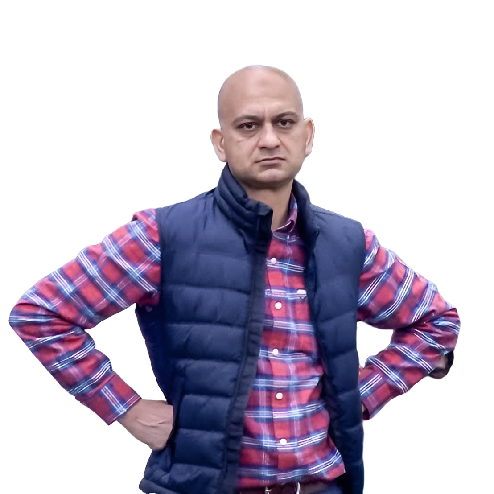
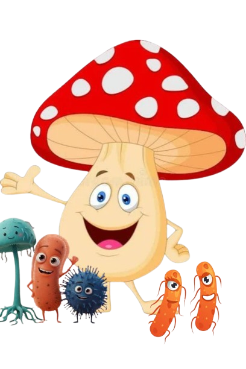

Decoding complex plant genomes, promoter motifs, and transcriptional signatures to engineer climate-resilient crops and secure future agricultural yields.

Unlocking genetic blueprints and deep biomarker pathways to accelerate precision medicine, diagnostics, and breakthrough therapeutic discoveries.
Advancing comparative genomics and molecular selection to optimize livestock health, breeding efficiency, and sustainable agricultural productivity.

Exploring complex microbial ecosystems and plant-microbe interactions to pioneer next-generation industrial and environmental biotech solutions.